Screenshots of the bench (-nestieBench 1) on an iPhone 17 simulator, iOS 27. Before is the commit this work started from.
Every decoration tile is its drawing in its window: a wearable on a kitten, a scene as a small window with a kitten in front, a pot on a monstera, a tree ornament on a magnolia, an ornament on the ground line beside a sunflower. Moons and bats are drawn at night, dusk at dusk. Plant and pet tiles were already drawn; their stills are now kept as bitmaps, and the card, the goal tile and the decorate tray use the same drawings.
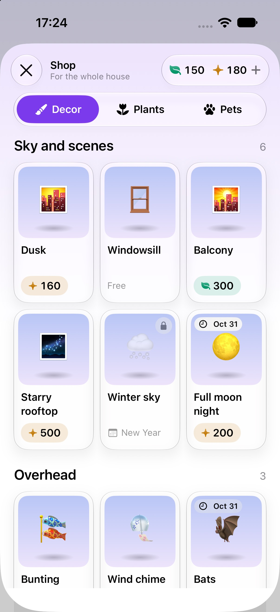
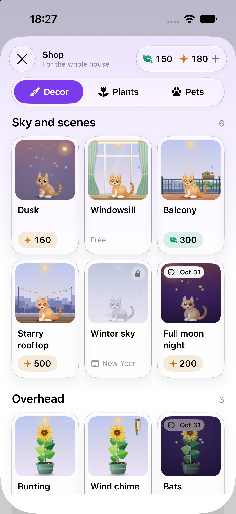
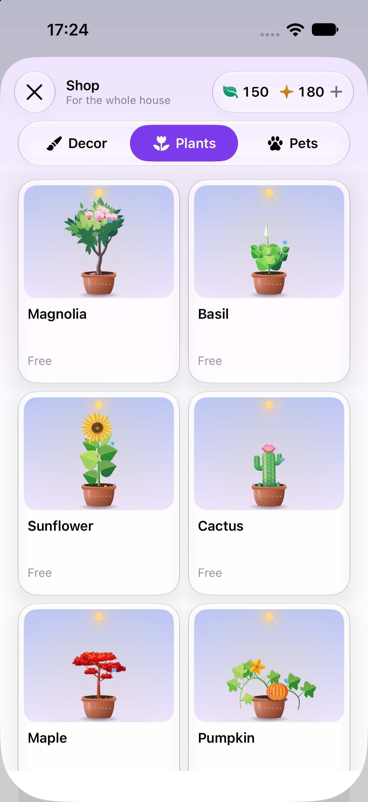
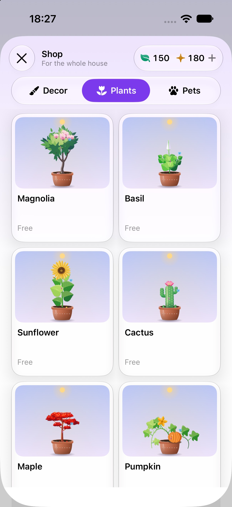
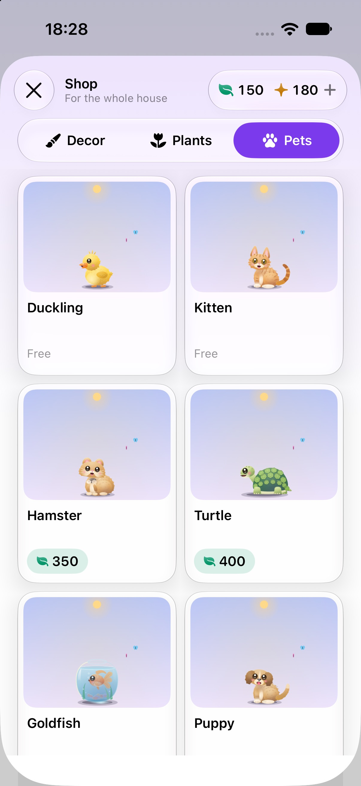
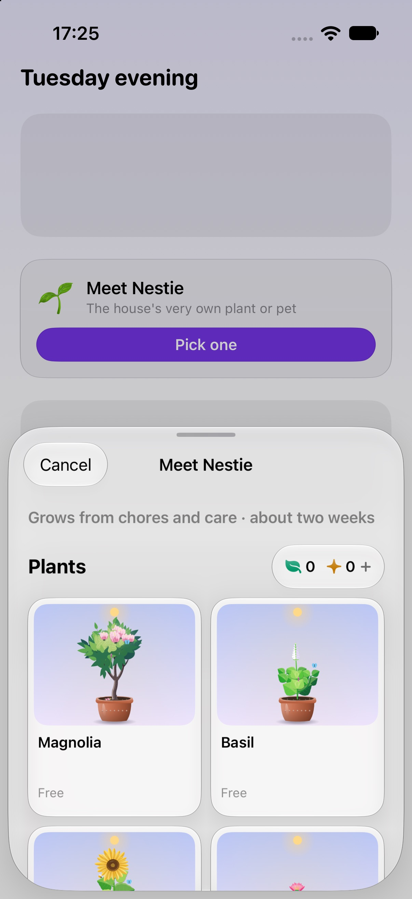
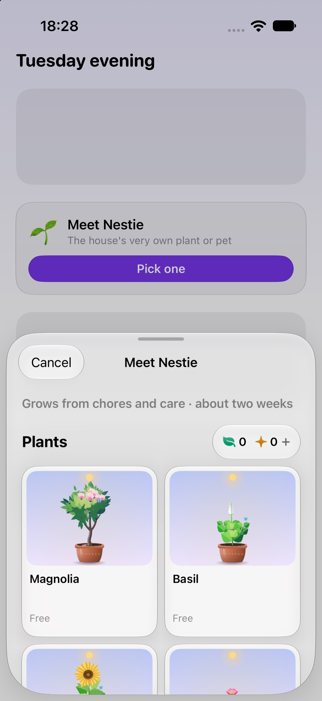
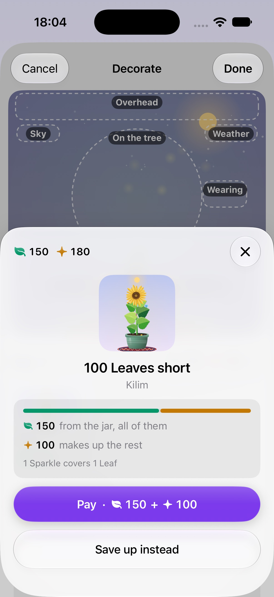
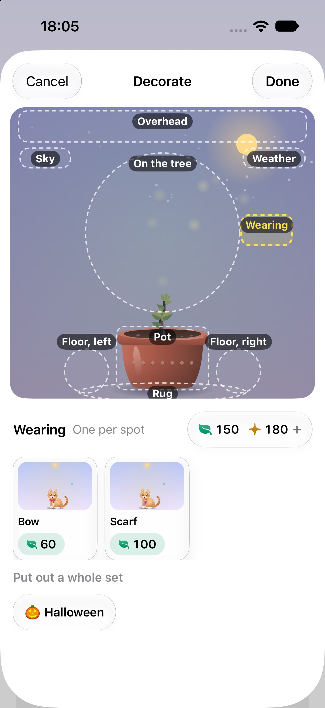
Bench, -frameMeter 1 -companionScroll 1 (the shelf goes to the bottom and back every 4 s), 7 windows of 2 s after the first 12 s. Late / dropped / worst frame.
| before | first cut | final | |
|---|---|---|---|
| Decor | 3 / 4 / 47 ms | 3 / 21 / 134 ms | 4 / 7 / 61, 2 / 5 / 60, 3 / 4 / 46 (three runs) |
| Plants | 10 / 22 / 74 ms | 5 / 12 / 77 ms | 4 / 4 / 36 ms |
| Pets | 0 | 0 | 0 |
| Choose | 113 / 208 / 188 ms | 12 / 21 / 70 ms | 11 / 22 / 77 ms |
The cause of the Decor regression was in the first cut's fallback: a tile built before its bitmap was ready drew the live canvas, and being equatable it never swapped to the bitmap afterwards. The log showed 34 tile bodies built as live canvases at shelf open and one built from a bitmap; those canvases then stayed in the shelf and were composited again every scroll (a sample of the process showed the main thread waiting on the GPU in waitUntilScheduled and no app code running in the late frame). Ablations with the cause removed: decoding for display (byPreparingForDisplay), the saturation and opacity group in the window, and Image from a CGImage against a UIImage each changed nothing measurable. The fix: an unready tile is its window alone and swaps its picture in when it lands (one observable slot per picture), pictures are warmed in the order the shelf lays them out, and the cache is bounded.
Before: the holiday chip and Water sat over the scene, the title and jar shared a row, and the four ways in shared one, so at the largest sizes the card was wider than the screen and words were cut to "Hall…", "Deco…" and "Sapling · cont…". After: from the accessibility sizes up the chip and Water go under the scene, the title and jar stack, the ways in are a list, and every label takes the lines it needs. At the default size the card is unchanged (the text area is pixel-identical, 0 pixels differing by more than 8 of 844,200).
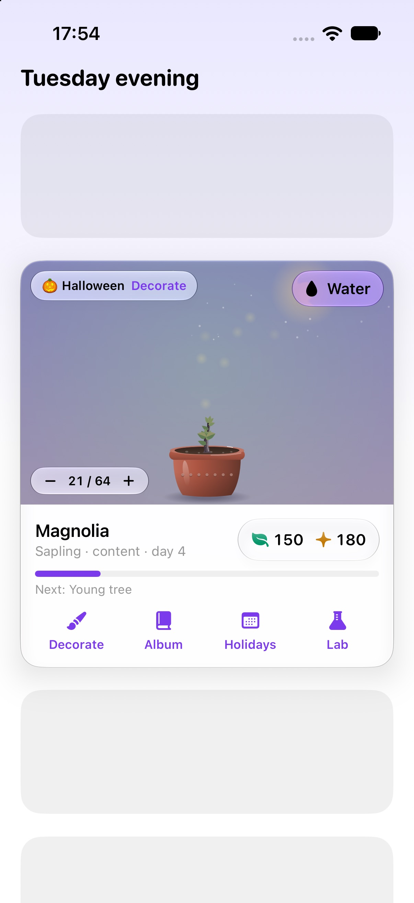
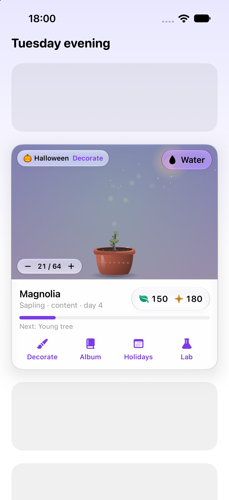
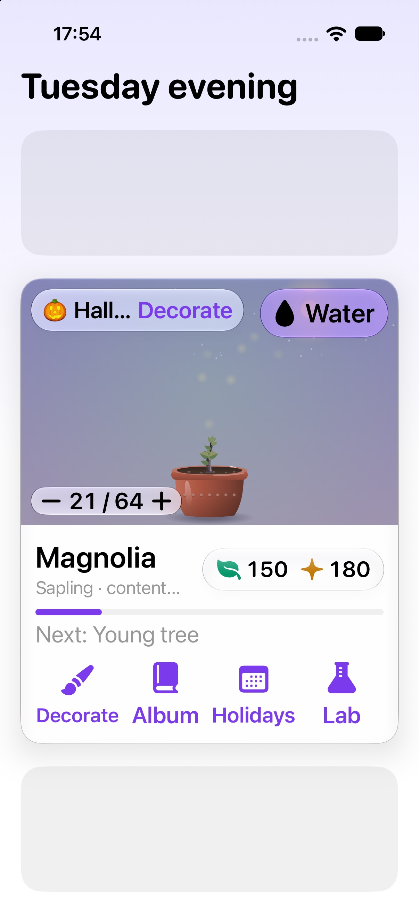
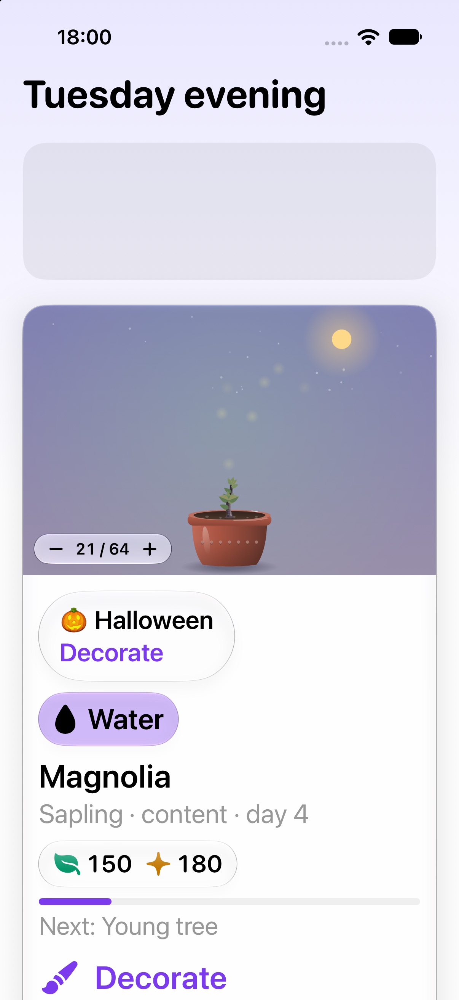
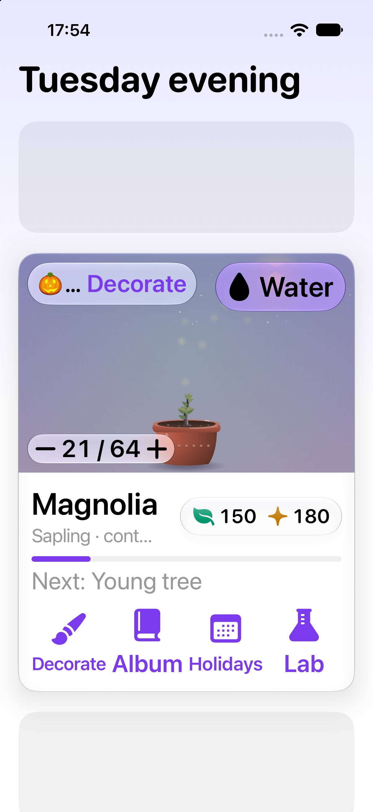
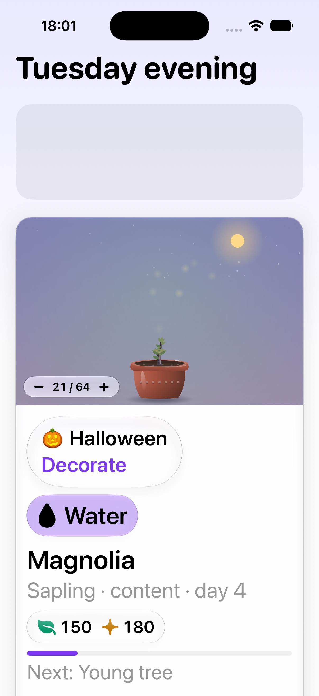
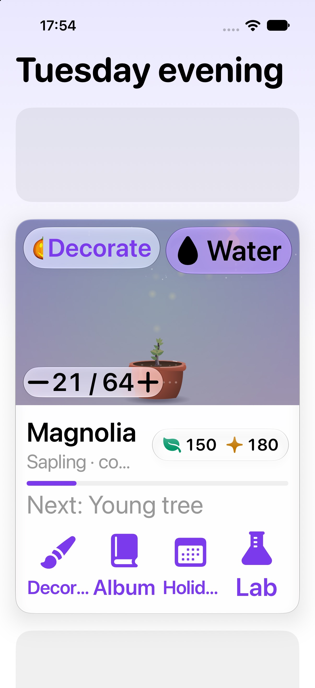
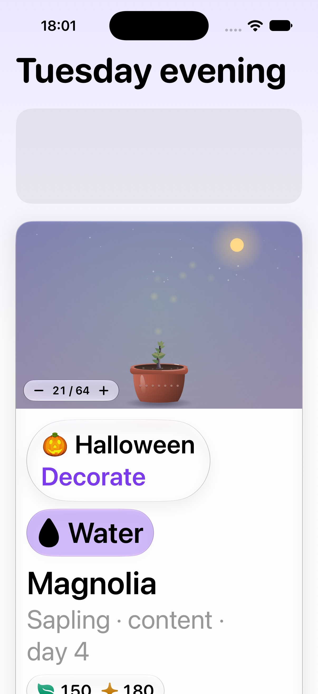
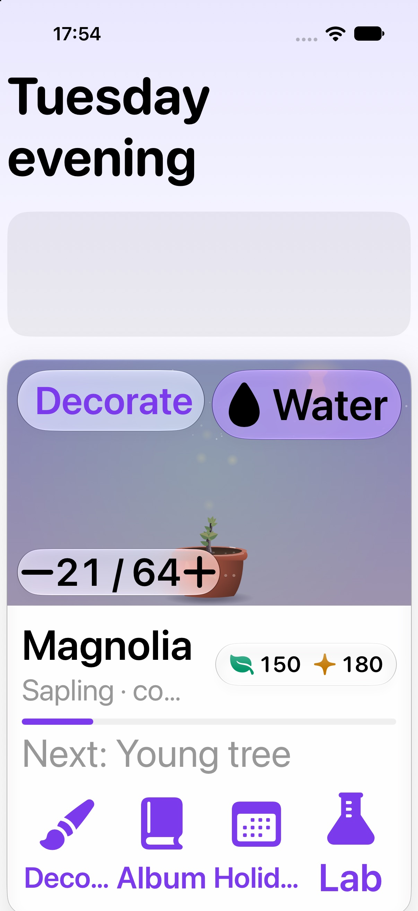
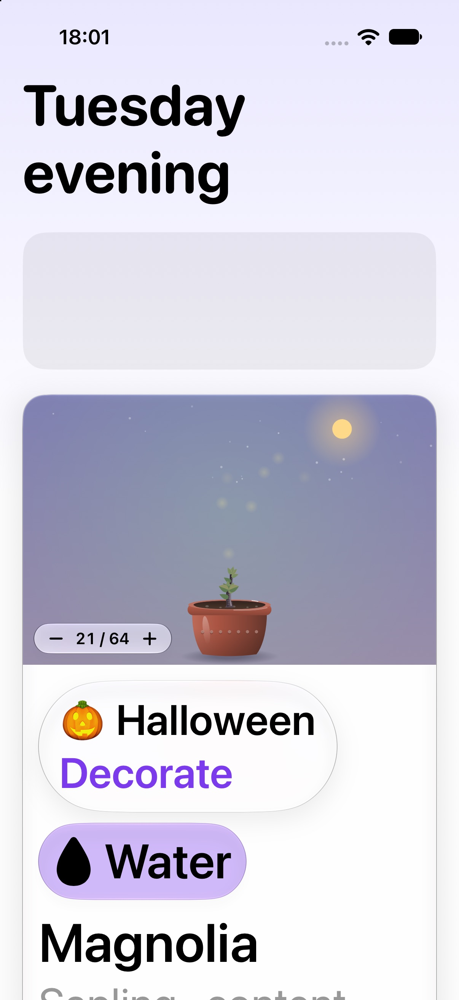
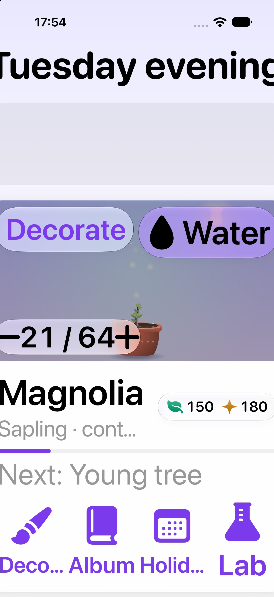
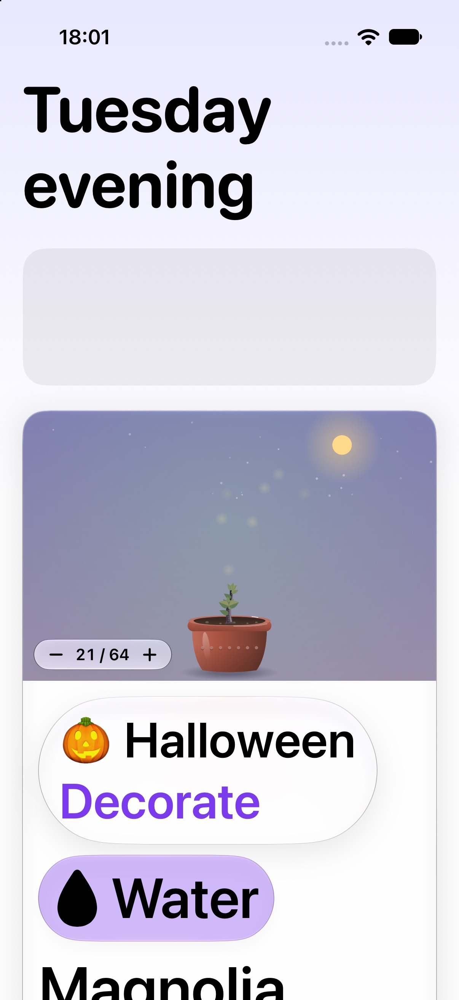
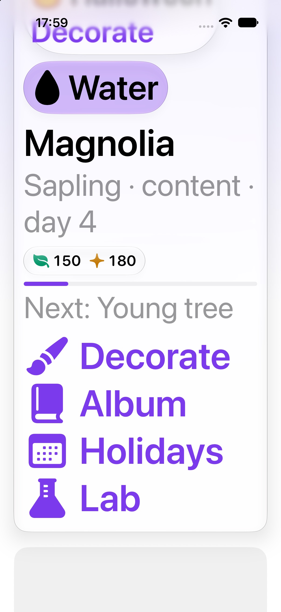